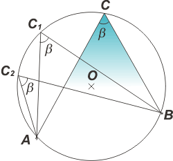
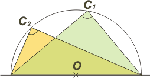

NO ME SALEN
EJERCICIOS RESUELTOS Y APUNTES DE FÍSICA Y BIOFÍSICA DEL CBC
Ángulo inscrito en una circunferencia
Se llama ángulo inscrito en una circunferencia a aquel formado por dos rectas que se cortan en un punto que pertenece a una circunferencia.
Su propiedad más importante es que su valor es la mitad del ángulo central correspondiente. Mirá el gráfico: |
|

|
 |
Dada la circunferencia de centro O, se llama ángulo inscrito al formado por las rectas que pasan por C, que pertenece a la circunferencia.
Llamemos a nuestro ángulo inscrito β, y llamemos a al ángulo central correspondiente. Se cumple que:
a = 2 β
Demostrar esa relación es muy sencillo. |
|
|
Tomemos una recta auxiliar que pase por O y por C. Quedan así determinados dos triángulos: AOC y BOC. |
 |
 |
Se trata de ángulos isósceles, ya que dos de sus lados -respectivamente- son iguales (radios de la circunferencia).
Trabajemos un poco con el de la derecha. Los triángulos isósceles no solamente tienen dos lados iguales, también tienen dos de sus ángulos iguales. En este caso β1. Su tercer ángulo debe cumplir la relación fundamental de los ángulos interiores de un triángulo:
β1 + β1 + γ = 180°
o sea:
γ = 180° — 2 β1
|
|
| A un resultado idéntico arribaremos si operamos con el triángulo de la izquierda: |
 |
β2 + β2 + δ = 180°
o sea:
δ = 180° — 2 β2
Si sumamos miembro a miembro los resultados del trabajo en cada triángulo obtenemos:
δ + γ = 360° — 2 β1 — 2 β2
δ + γ = 360° — 2 ( β1 + β2 )
δ + γ = 360° — 2 β
|
|
| Por otro lado, los tres ángulos centrales suman el giro completo: δ + γ + a = 360° |
 |
Y si a esta última le restamos miembro a miembro la anterior, nos queda:
|
|
Que es lo que queríamos demostrar.
Este resultado tiene varias consecuencias sorprendentes e insospechadas. |
|
| Por ejemplo: todos los ángulos inscritos en una circunferencia entre dos puntos cualesquiera... son iguales. |
|  |
Y todos ellos, claro está miden la mitad del ángulo central correspondiente (que acá no dibujé).
|
|
| Y todavía una conclusión más sorprendente: |
|  |
Todos los ángulos inscritos en una semicircunferencia valen un recto, 90°, ya que el ángulo central correspondiente es el llano, 180°.
O sea que todos los triángulos que dibujes con un lado apoyado sobre un diámetro de una circunferencia y el vértice opuesto inscrito en la circunferencia, serán triángulos rectángulos. El lado apoyado es la hipotenusa.
|
|
| Este teorema se atribuye a Tales de Mileto, y por eso, a la semicircunferencia también se la llama espacio geométrico de Tales... qué paquete. |
| |
| Algunos derechos reservados.
Se permite su reproducción citando la fuente. Última actualización oct-14. Buenos Aires, Argentina. |
|
| | | | |
| | | | |
| | | | |
|